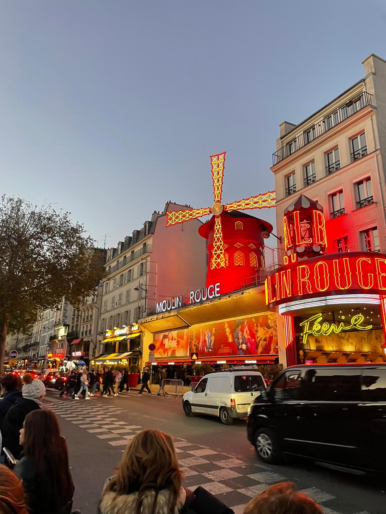
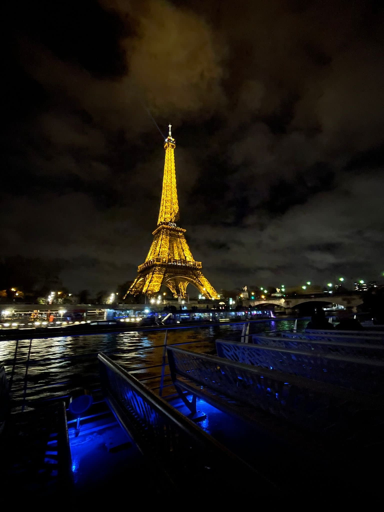

Viatge a França - 2023
Introducció
El viatge a França va ser semblant al d'Itàlia, amb la diferència que en comptes de 4 de l'ESO, va ser per 2 de Batxillerat. Es va fer el 2023 perquè va ser al desembre, però en teoria era el viatge de final de curs de Batxillerat, el qual vaig acabar el 2024.
Primer Dia: Arribada a França
El primer dia de França es va assemblar al primer dia d'Itàlia, ja que també vam anar amb autocar, i, òbviament, no es va poder dormir, aquell dia va ser desastrós i la nit un escandal.
Anècdota del dia
Vam anar a un museu el qual no recordo bé, però del que me'n recordo és que ens vam dividir per grups i els professors no van saber organitzar-ho bé, i el meu grup es va quedar perdut al museu durant hores, estàvem cansats d'estar pels mateixos passadissos i no se'n podia sortir. Al final, gràcies a la gràcia divina, va arribar un professor i ens en va treure.